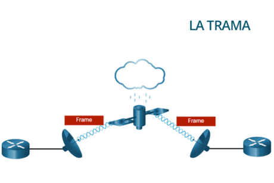

El protocolo de enlace de datos es responsable de las comunicaciones de NIC a NIC dentro de la misma red. En la capa de enlace, los datos se organizan en tramas. El formato de las tramas varía según la tecnología de red utilizada, pero todas las tramas siguen un esquema básico de estructura:
- Cabecera (Header): Incluye la dirección física (dirección MAC) de origen y destino, un tipo de protocolo que indica qué protocolo de capa superior está siendo encapsulado (por ejemplo, IP), y otros campos específicos de la tecnología de red.
- Datos (Payload): Es la carga útil, que contiene los datos encapsulados desde la capa de red. Este campo tiene un tamaño máximo que depende de la tecnología de red, como la unidad máxima de transmisión (MTU). Por ejemplo, en Ethernet, el tamaño máximo de una trama es de 1518 bytes, con un MTU de 1500 bytes para los datos.
- Tráiler (Trailer): Generalmente contiene el campo FCS (Frame Check Sequence), que utiliza un algoritmo de verificación de redundancia cíclica (CRC) para detectar errores en la transmisión de datos. Si se detecta un error, la trama puede ser descartada o retransmitida.
A diferencia de otros protocolos de encapsulación, la capa de enlace de datos agrega información en forma de un trailer al final de la trama.
Todos los protocolos de capa de enlace de datos encapsulan los datos dentro del campo de datos de la trama. Sin embargo, la estructura de la trama y los campos contenidos en el encabezado y el avance varían según el protocolo.
No existe una estructura de trama única que satisfaga las necesidades de todo el transporte de datos en todos los tipos de medios. Dependiendo del entorno, la cantidad de información de control necesaria en la trama varía para coincidir con los requisitos de control de acceso de los medios y la topología lógica. Por ejemplo, una trama WLAN debe incluir procedimientos para evitar colisiones y, por lo tanto, requiere información de control adicional en comparación con una trama Ethernet.
Como se muestra en la imagen, en un entorno frágil, se necesitan más controles para garantizar la entrega. Los campos de encabezado y trailer son más grandes a medida que se necesita más información de control.

Se necesita un mayor esfuerzo para garantizar la entrega. Esto significa mayores gastos generales y velocidades de transmisión más lentas.